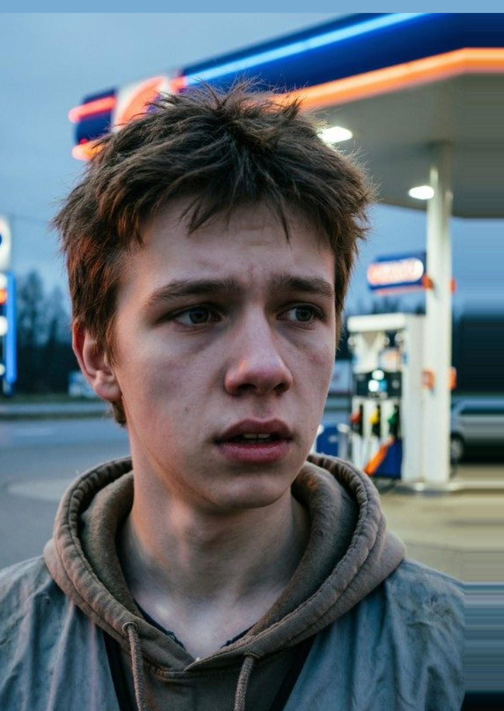
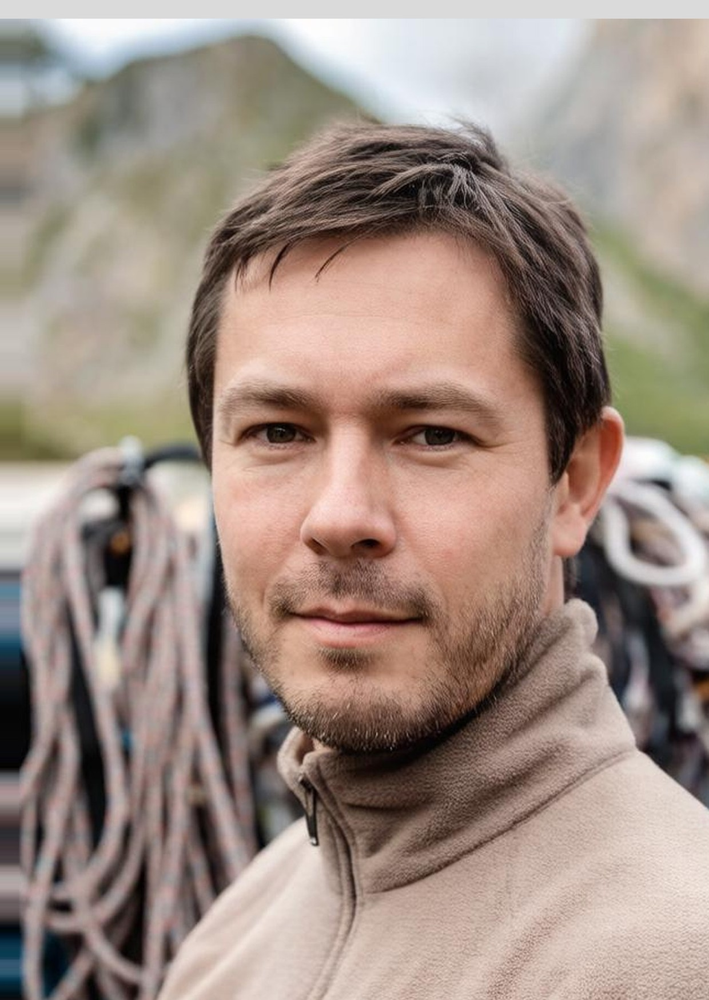
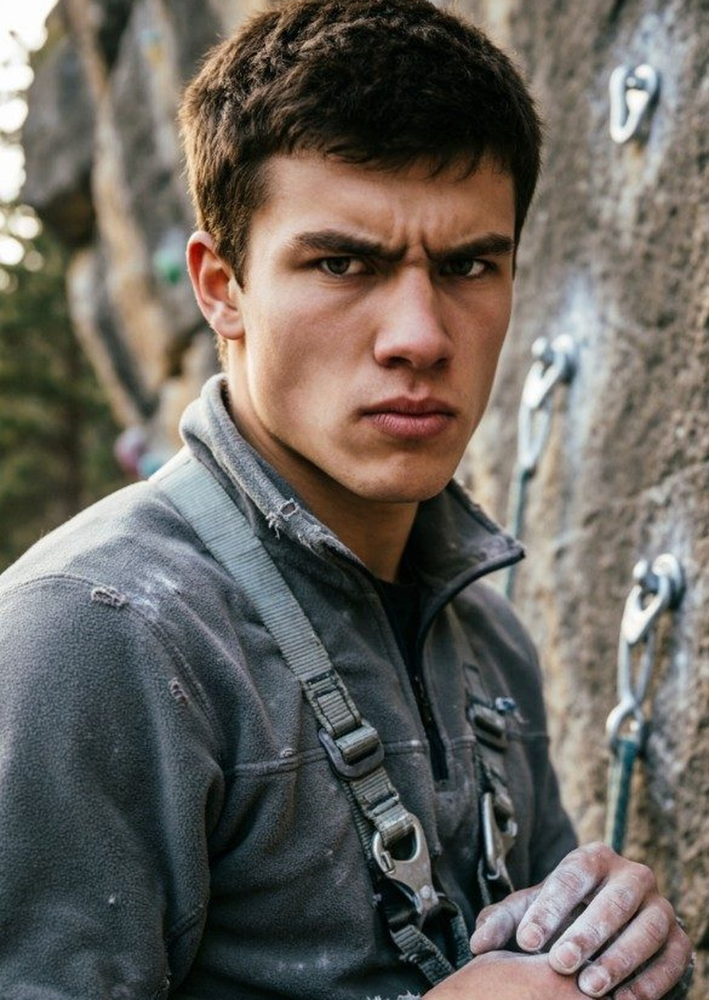
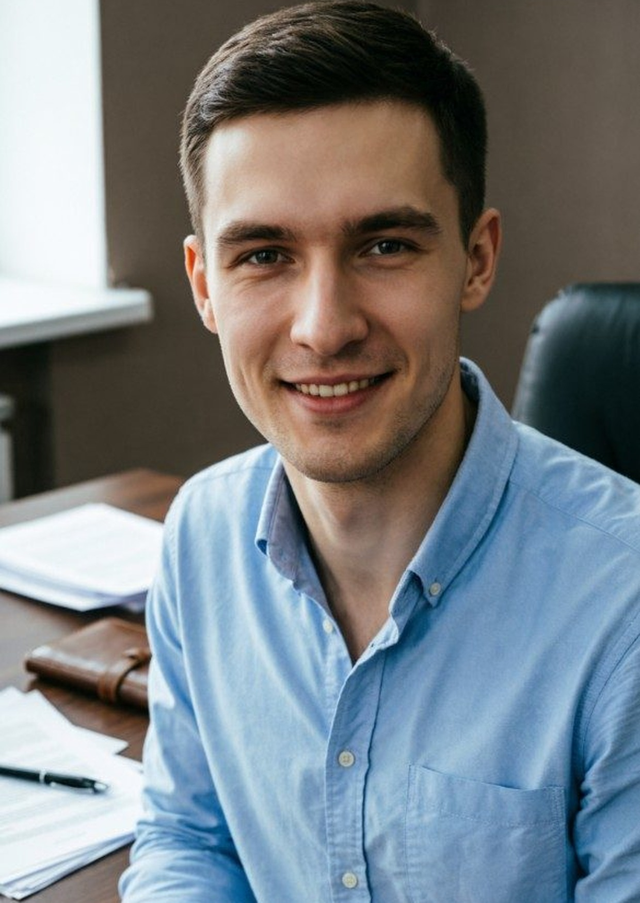
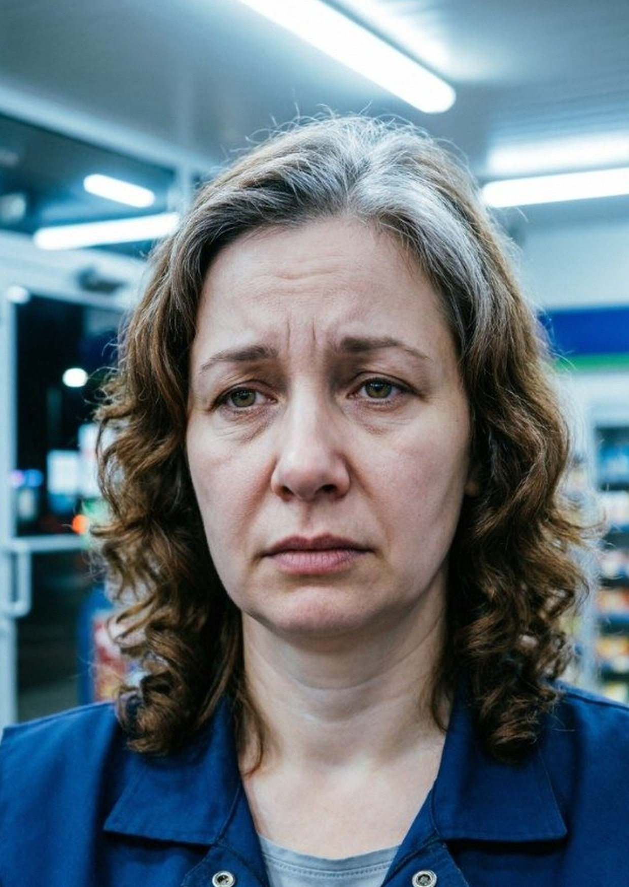
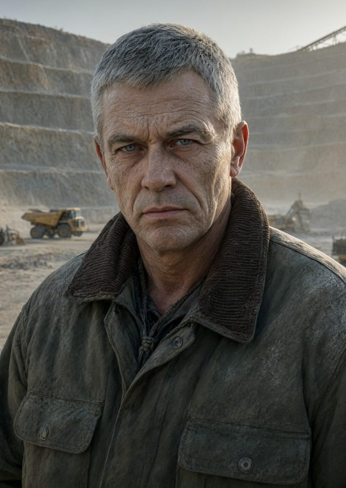
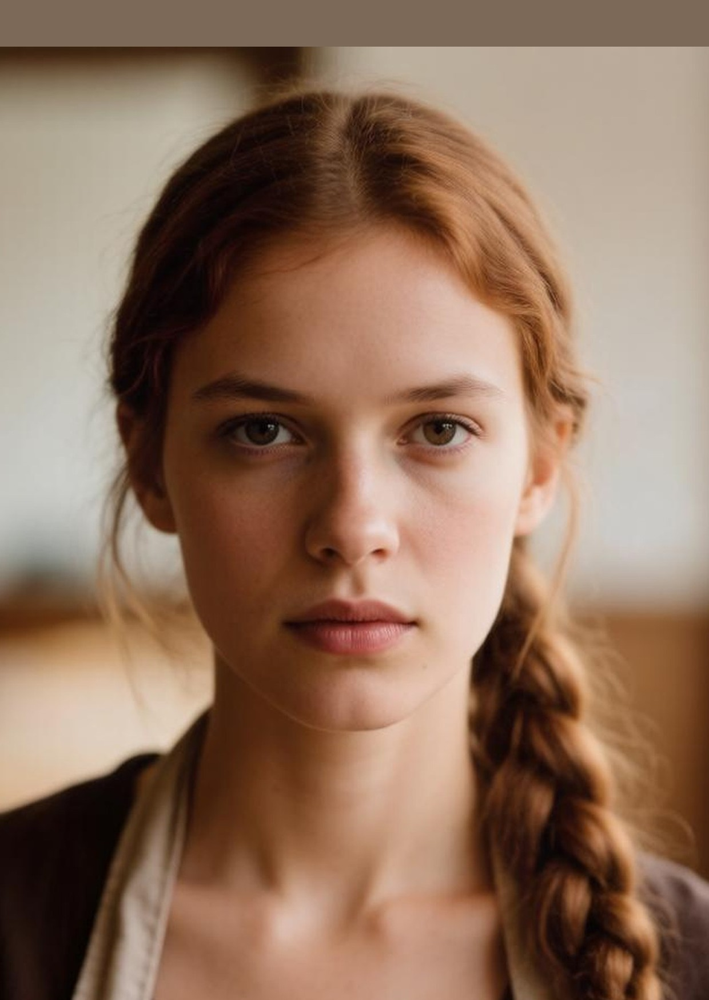
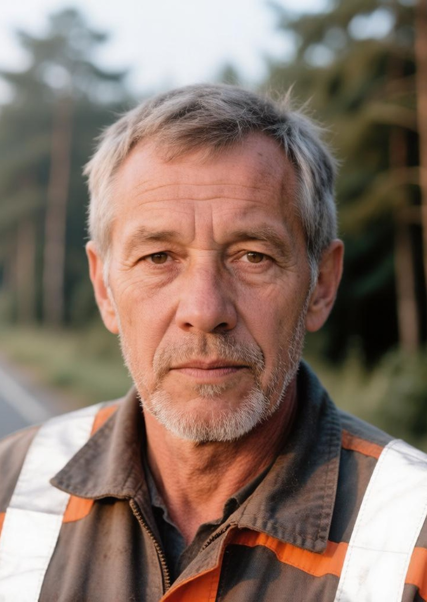
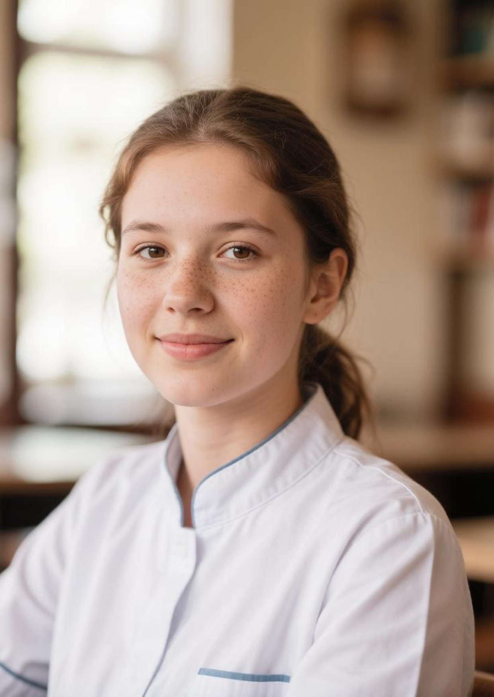
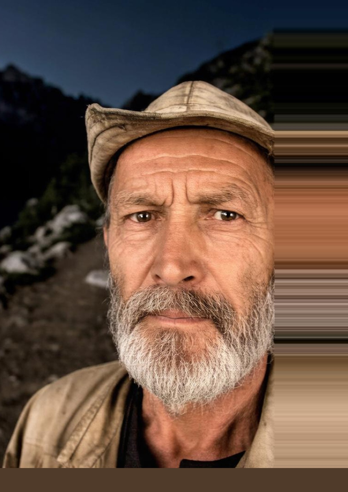

Круг лиц
Жертва
| ФИО | Роль | Работа |
|---|---|---|
 Белова Кира · 19 Белова Кира · 19 |
Жертва | СПбГЭУ · логистика туризма; волонтёр «Седой Хребет» |
Подозреваемые
| ФИО | Роль | Работа |
|---|---|---|
 1. Тишин Роман · 21 | Задержанный | АЗС «Трак» |
 2. Орлов Никита · 38 | Склад / касса | Старший инструктор |
 3. Кольцов Артём · 21 | Парень | База турклуба / скалы |
 4. Селезнёв Марк · 25 | «Друг-парень» / касса | Учёт взносов клуба |
Свидетели и окружение
| ФИО | Роль | Работа |
|---|---|---|
 Владыкин Игорь · 55 Владыкин Игорь · 55 | врач (убийца вскрывается позже) | Психиатр «Горный покой» |
 Тишина Галина · 42 | Заказчик | Шеф-повар кафе «Скала» |
 Белов Валерий · 55 | Отец жертвы | Бригадир карьера |
 Рыжова Софья · 22 | Алиби Кольцову (ложь) | Кафе «Скала» |
 Дудин Степан · 56 | Нашёл тело | Дорожный мастер |
 Самойлова Вера · 19 | Подруга · фон / SMS | Медколледж |
 Лебедев Фёдор · 65 | Двое у озера ~23:00 | Лесник |